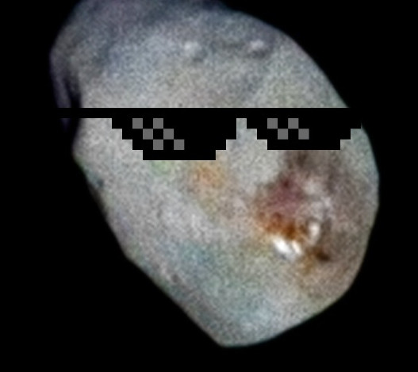

Reproducible data science with Nix, part 1 – what is Nix

This is the first of a (hopefully) series of posts about Nix. Disclaimer: I’m a super beginner with Nix. So this series of blog posts is more akin to notes that I’m taking while learning than a super detailed tutorial. So if you’re a Nix expert and read something stupid in here, that’s normal. This post is going to focus on R (obviously) but the ideas are applicable to any programming language.
To ensure that a project is reproducible you need to deal with at least four things:
- Make sure that the required/correct version of R (or any other language) is installed;
- Make sure that the required versions of packages are installed;
-
Make sure that system dependencies are installed (for example, you’d need a working Java installation to install the
{rJava}R package on Linux); - Make sure that you can install all of this for the hardware you have on hand.
For the three first bullet points, the consensus seems to be a mixture of Docker to deal with system dependencies, {renv} for the packages (or {groundhog}, or a fixed CRAN snapshot like those Posit provides) and the R installation manager to install the correct version of R (unless you use a Docker image as base that already ships the required version by default). As for the last point, the only way out is to be able to compile the software for the target architecture. There’s a lot of moving pieces, and knowledge that you need to know and I even wrote a whole 522 pages book about all of this.
But it turns out that this is not the only solution. Docker + {renv} (or some other way to deal with packages) is likely the most popular way to ensure reproducibility of your projects, but there are other tools to achieve this. One such tool is called Nix.
Nix is a package manager for Linux distributions, macOS and apparently it even works on Windows if you enable WSL2. What’s a package manager? If you’re not a Linux user, you may not be aware. Let me explain it this way: in R, if you want to install a package to provide some functionality not included with a vanilla installation of R, you’d run this:
install.packages("dplyr")It turns out that Linux distributions, like Ubuntu for example, work in a similar way, but for software that you’d usually install using an installer (at least on Windows). For example you could install Firefox on Ubuntu using:
sudo apt-get install firefox
(there’s also graphical interfaces that make this process “more user-friendly”). In Linux jargon, packages are simply what normies call software (or I guess it’s all “apps” these days). These packages get downloaded from so-called repositories (think of CRAN, the repository of R packages) but for any type of software that you might need to make your computer work: web browsers, office suites, multimedia software and so on.
So Nix is just another package manager that you can use to install software.
But what interests us is not using Nix to install Firefox, but instead to install R and the R packages that we require for our analysis (or any other programming language that we need). But why use Nix instead of the usual ways to install software on our operating systems?
The first thing that you should know is that Nix’s repository, nixpkgs, is huge. Humongously huge. As I’m writing these lines, there’s more than 80’000 pieces of software available, and the entirety of CRAN is also available through nixpkgs. So instead of installing R as you usually do and then use install.packages() to install packages, you could use Nix to handle everything. But still, why use Nix at all?
Nix has an interesting feature: using Nix, it is possible to install software in (relatively) isolated environments. So using Nix, you can install as many versions of R and R packages that you need. Suppose that you start working on a new project. As you start the project, with Nix, you would install a project-specific version of R and R packages that you would only use for that particular project. If you switch projects, you’d switch versions of R and R packages. If you are familiar with {renv}, you should see that this is exactly the same thing: the difference is that not only will you have a project-specific library of R packages, you will also have a project-specific R version. So if you start a project now, you’d have R version 4.2.3 installed (the latest version available in nixpkgs but not the latest version available, more on this later), with the accompagnying versions of R packages, for as long as the project lives (which can be a long time). If you start a project next year, then that project will have its own R, maybe R version 4.4.2 or something like that, and the set of required R packages that would be current at that time. This is because Nix always installs the software that you need in separate, (isolated) environments on your computer. So you can define an environment for one specific project.
But Nix even goes even further: not only can you install R and R packages using Nix (in isolated) project-specific environments, Nix even installs the required system dependencies. So for example if I need {rJava}, Nix will make sure to install the correct version of Java as well, always in that project-specific environment (so if you already some Java version installed on your system, there won’t be any interference).
What’s also pretty awesome, is that you can use a specific version of nixpkgs to always get exactly the same versions of all the software whenever you build that environment to run your project’s code. The environment gets defined in a simple plain-text file, and anyone using that file to build the environment will get exactly, byte by byte, the same environment as you when you initially started the project. And this also regardless of the operating system that is used.
So let me illustrate this. After installing Nix, I can define an environment by writing a file called default.nix that looks like this:
{ pkgs ? import (fetchTarball "https://github.com/NixOS/nixpkgs/archive/e11142026e2cef35ea52c9205703823df225c947.tar.gz") {} }:
with pkgs;
let
my-pkgs = rWrapper.override {
packages = with rPackages; [ dplyr ggplot2 R];
};
in
mkShell {
buildInputs = [my-pkgs];
}
Now this certainly looks complicated! And it is. The entry cost to Nix is quite high, because, actually, Nix is more than a package manager. It is also a programming language, and this programming language gets used to configure environments. I won’t go too much into detail, but you’ll see in the first line that I’m using a specific version of nixpkgs that gets downloaded directly from Github. This means that all the software that I will install with that specific version of nixpkgs will always install the same software. This is what ensures that R and R packages are versioned. Basically, by using a specific version of nixpkgs, I pin all the versions of all the software that this particular version of Nix will ever install. I then define a variable called my-pkgs which lists the packages I want to install ({dplyr}, {ggplot2} and R).
By the way, this may look like it would take a lot of time to install because, after all, you need to install R, R packages and underlying system dependencies, but thankfully there is an online cache of binaries that gets automatically used by Nix (cache.nixos.org) for fast installations. If binaries are not available, sources get compiled.
I can now create an environment with these exact specifications using (in the directory where default.nix is):
nix-buildor I could use the R version from this environment to run some arbitrary code:
nix-shell /home/renv/default.nix --run "Rscript -e 'sessionInfo()'" >> /home/renv/sessionInfo.txt
(assuming my default.nix file is available in the /home/renv/ directory). This would build the environment on the fly and run sessionInfo() inside of it. Here are the contents of this sessionInfo.txt file:
R version 4.2.3 (2023-03-15)
Platform: x86_64-pc-linux-gnu (64-bit)
Matrix products: default
BLAS/LAPACK: /nix/store/pbfs53rcnrzgjiaajf7xvwrfqq385ykv-blas-3/lib/libblas.so.3
locale:
[1] C
attached base packages:
[1] stats graphics grDevices utils datasets methods base
loaded via a namespace (and not attached):
[1] compiler_4.2.3
This looks like any other output of the sessionInfo() function, but there is something quite unusual: the BLAS/LAPACK line:
BLAS/LAPACK: /nix/store/pbfs53rcnrzgjiaajf7xvwrfqq385ykv-blas-3/lib/libblas.so.3
BLAS is a library that R uses for linear algebra, matrix multiplication and vector operations. R usually ships with its own version of BLAS and LAPACK, but it’s also possible to use external ones. Here, we see that the path to the shared object libblas.so.3 is somewhere in /nix/store/….. /nix/store/ is where all the software gets installed. The long chain of seemingly random characters is a hash, essentially the unique identifier of that particular version of BLAS. This means that unlike Docker, if you’re using Nix you are also certain than these types of dependencies, that may have an impact on your results, also get handled properly, and that the exact same version you used will keep getting installed in the future. Docker images also evolve, and even if you use an LTS release of Ubuntu as a base, the underlying system packages will evolve through time as well. And there will be a point in time where this release will be abandoned (LTS releases receive 5 years of support), so if you need to rebuild a Docker images based on an LTS that doesn’t get supported anymore, you’re out of luck.
If you don’t want to install Nix just yet on your computer, you should know that there’s also a complete operating system called NixOS, that uses Nix as its package manager, and that there are Docker images that use NixOS as a base. So this means that you could use such an image and then build the environment (that is 100% completely reproducible) inside and run a container that will always produce the same output. To see an example of this, check out this Github repo. I’m writing a Dockerfile as I usually do, but actually I could even use Nix to define the Docker image for me, it’s that powerful!
Nix seems like a very powerful tool to me. But there are some “issues”:
-
As I stated above, the entry cost is quite high, because Nix is not “just a tool”, it’s a complete programming language that can even run pipelines, so you could technically even replace something like
{targets}with it; -
If you need to install specific versions of R packages, that are not pinned to dates, then Nix is not for you. Nix will always create a coherent environment with R and R packages that go together for a particular release of
nixpkgs. If for some reason you need a very old version of{ggplot2}but a much more recent version of{dplyr}, using Nix won’t make this any easier than other methods; -
There is no easy way (afaik) to find the version of
nixpkgsthat you need to download to find the version of R that you may need; UPDATE: turns out that there is such a simple tool, thanks to @shane@hachyderm.io for the telling me! -
R packages (and I guess others for other programming languages as well) that are available on the stable channel of
nixpkgslag a bit behind their counterparts on CRAN. These usually all get updated whenever there’s a new release of R. Currently however, R is at version 4.2.3, but R should be at version 4.3.1 on the stable branch ofnixpkgs. This can sometimes happen due to various reasons (there are actual human beings behind this that volunteer their time and they also have a life). There is however an “unstable”nixpkgschannel that contains bleeding edge versions of R packages (and R itself) if you really need the latest versions of packages (don’t worry about the “unstable” label, from my understanding this simply means that package have not been thoroughly tested yet, but is still pretty much rock-solid); - If you need something that is not on CRAN (or Bioconductor) then it’s still possible to use Nix to install these packages, but you’ll have to perform some manual configuration.
I will keep exploring Nix, and this is essentially my todo:
- using my environment that I installed with Nix to work interactively;
-
write some tool that lets me specify an R version, a list of packages and it generates a
default.nixfile automagically (ideally it should also deal with packages only available on Github); - ????
- Profit!
Resources
Here are some of the resources I’ve been using:
- nix.dev tutorials
- INRIA’s Nix tutorial
- Nix pills
- Nix for Data Science
- NixOS explained: NixOS is an entire Linux distribution that uses Nix as its package manager.
- Blog post: Nix with R and devtools
- Blog post: Statistical Rethinking and Nix
- Blog post: Searching and installing old versions of Nix packages
Thanks
Many thanks to Justin Bedő, maintainer of the R package for Nix, for answering all my questions on Nix!